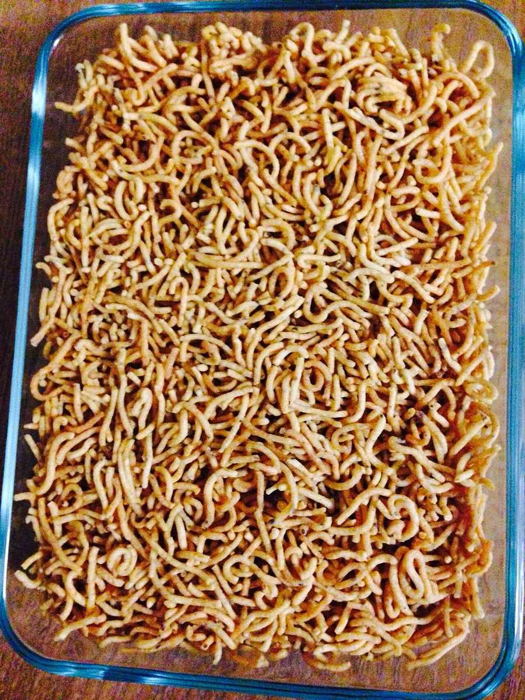

Sev
vermicelli fried in ghee and sweetened with raisins, almonds and cardamom for birthday mornings

Contains: milk, gluten, tree nuts
Checked against the ingredient list for milk, egg, fish, crustaceans, tree nuts, peanuts, sesame, mustard, soy and gluten. Nothing else is checked, and brands vary, so read the label on anything you have not bought before.
Ingredients
Quantities for 4.
- 150g, broken into 3cm lengths Vermicelliwheat seviyan, not rice noodles
- 4 tbsp Ghee
- 120g Sugar
- 350ml Water
- 3 tbsp Raisins
- 3 tbsp, slivered Almonds
- 2 tbsp, slivered Pistachiosoptional
- 6 pods, seeds crushed Cardamom
- a scraping Nutmegoptional
- 1 tsp Rose Wateroptional
- a good pinch Saffronsoaked in 1 tbsp warm wateroptional
- a pinch Salt
Cookware
stovetop
Before you start
- Soak the raisins in warm water for 10 minutes so they plump rather than burn in the ghee.
- Have the water measured and hot before you start roasting. Cold water hitting hot vermicelli makes it clump.
- Sev is eaten at Parsi birthdays and on Navroze morning, usually with dahi alongside.
Method
- Melt the ghee over medium-low heat and fry the almonds and pistachios for 1 minute until they just colour. Lift them out.
- Fry the drained raisins in the same ghee for 30 seconds, until they swell. Lift them out too.They puff and then burn very quickly. Watch them, do not walk away.
- Add the broken vermicelli and roast, stirring constantly, 5-7 minutes until it is an even reddish brown and smells nutty.Even colour is everything. Stir continuously and keep the heat moderate. The strands at the edge catch first.
- Pour in the hot water with the pinch of salt. It will hiss violently. Stir once.
- Cover and cook on low 6 minutes, until the vermicelli is soft and almost all the water has gone.
- Add the sugar and stir. The mixture will loosen again as the sugar melts.The sugar goes in after the vermicelli is soft. Add it early and the strands stay hard.
- Cook uncovered 6-8 minutes, stirring gently, until the syrup has been absorbed and the sev is glossy and just moist.
- Stir in the crushed cardamom, nutmeg, saffron water and rose water, then fold back the nuts and raisins.
- Rest covered 5 minutes off the heat and serve warm, with plain yogurt on the side.
Storage
Keeps 3 days refrigerated. Reheat in a pan with a tablespoon of milk or water and a knob of ghee to bring the gloss back; microwaving dries it out.
Nutrition Low estimate
| Per serving110 g | Per 100 g | |
|---|---|---|
| Calories | 508+ kcal | 461+ kcal |
| Protein | 9.2+ g | 8+ g |
| Carbohydrate | 71.5+ g | 65+ g |
| of which sugars | 39.4+ g | 36+ g |
| Fibre | 3.8+ g | 3+ g |
| Fat | 22.3+ g | 20+ g |
| of which saturated | 8.9+ g | 8+ g |
| of which unsaturated | 12.2+ g | 11+ g |
The + means ingredients given to taste rather than by weight are counted as zero, so the true figure is a little higher than shown. A rough guide only. A large part of this ingredient list is given to taste rather than by weight, or much of what is weighed is not eaten. Ingredients given to taste rather than by weight are counted as zero, so the real figure is a little higher than this. The + says so. Some ingredients have no exact match in the nutrient database and use the nearest equivalent: vermicelli. Estimated from raw ingredients using USDA FoodData Central. Cooking changes are not modelled, and added salt is excluded, so sodium is not given.
Written and checked against sources, not cooked in a test kitchen. Times, yields and keeping times are guides, and the allergen and nutrition figures are worked out from the ingredient list rather than measured. Use your own judgement, particularly on doneness and on anything you are storing or reheating. More in About.